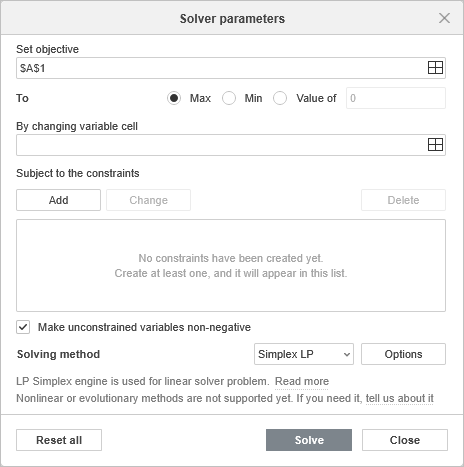
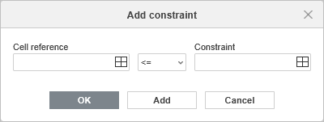
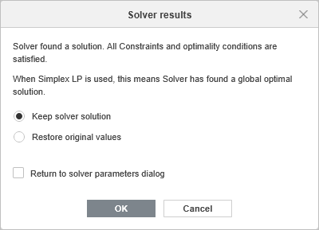

Solver
The Spreadsheet Editor offers a Solver feature that allows you to find an optimal solution for a problem by adjusting values in specified cells. Solver works by changing the values in decision variable cells to maximize, minimize, or set a specific value in an objective cell, while respecting any constraints you define.
Solver is particularly useful for linear programming problems where you need to optimize resource allocation, production planning, scheduling, or other business decisions subject to various limitations.
The Solver feature uses the Simplex LP method, which is designed specifically for linear programming problems. This means your objective function and all constraints must be linear functions of the decision variables.
How to use Solver
To use the Solver feature, follow these steps:
-
Prepare your spreadsheet with the following elements:
- Variable cells - the cells containing values that Solver will change to reach the optimal solution. These cells should contain initial values (zeros are supported).
- Objective cell - a cell containing a formula that depends on the variable cells. This is the value you want to maximize, minimize, or set to a specific target.
- Constraint cells - cells containing formulas that calculate values which must meet certain conditions (optional but typically required).
- Go to the Data tab and click the Solver icon on the top toolbar.
-
In the opened Solver parameters window, configure the following options:

-
Set objective: enter the reference to the cell containing the formula you want to optimize. You can click the cell directly in the spreadsheet by using the Select data button or type the cell reference manually. Select one of the following options to specify the optimization goal:
- Max - to find the maximum possible value for the objective cell.
- Min - to find the minimum possible value for the objective cell.
- Value of - to make the objective cell equal to a specific value. Enter the target value in the field manually.
- By changing variable cell: enter the references to the cells that Solver will modify to achieve the optimal result. These are your decision variables. You can select multiple cells or cell ranges using the Select data button. To select non-adjacent cells, separate the references with commas (e.g.,
B2,B3,B4orB2:B4,C2:C4). -
Subject to the constraints: this section allows you to define the limitations that the solution must satisfy. Manage the constraints using the following buttons:
-
Add - click to create a new constraint. The following settings are available in the constraint dialog window:

- Cell reference - enter or select the cell or range containing the value to be constrained.
- Select the required operator: <= (less than or equal to), >= (greater than or equal to), or = (equal to).
- Constraint - enter the limiting value or reference to a cell containing the limiting value.
Click OK to add the constraint and close the dialog, or click Add to save the current constraint and add another one.
- Change - select an existing constraint from the list and click this button to modify its parameters. The constraint dialog will open with the current values, allowing you to edit the cell reference, operator, or constraint value.
- Delete - select an existing constraint from the list and click this button to remove it. The constraint will be immediately deleted from the list.
-
Add - click to create a new constraint. The following settings are available in the constraint dialog window:
- Make unconstrained variables non-negative: check this box to add an implicit constraint that prevents variable cells from taking negative values. When enabled, Solver will only consider solutions where all variable cells are greater than or equal to zero.
-
Solving method: select the algorithm that Solver will use to find the optimal solution. The available method is:
- Simplex LP - the Simplex method for linear programming problems. This method is designed for problems where the objective function and all constraints are linear functions of the variables.
- Click Solve to start the optimization process.
-
Set objective: enter the reference to the cell containing the formula you want to optimize. You can click the cell directly in the spreadsheet by using the Select data button or type the cell reference manually. Select one of the following options to specify the optimization goal:
-
The Solver results window will display the outcome:

- If a solution is found, you will see a message indicating that Solver found a solution that satisfies all constraints.
- Choose whether you want to keep solver solution (you can see it in the spreadsheet in the background) or to restore original values.
- You can return to solver parameters dialog to adjust them more by clicking the corresponding checkbox.
- Click OK to keep the solution values in your spreadsheet.
- Click Cancel to restore the original values before the optimization.
Solver vs Goal Seek
While both Solver and Goal Seek are optimization tools, they serve different purposes:
- Goal Seek finds a single input value needed to achieve a specific result in a formula. It changes only one cell to reach a target value.
- Solver can change multiple cells simultaneously using the By changing variable cell option and allows you to add constraints via Subject to the constraints. It finds optimal solutions (maximum, minimum, or specific value) for more complex problems.
Use Goal Seek for simple single-variable problems and Solver for multi-variable optimization problems with constraints.
Limitations
The current implementation of Solver has the following limitations:
- Only the Simplex LP solving method is available, which requires all relationships to be linear.
- Integer, binary, and differential constraints are not supported. All variables are treated as continuous values.